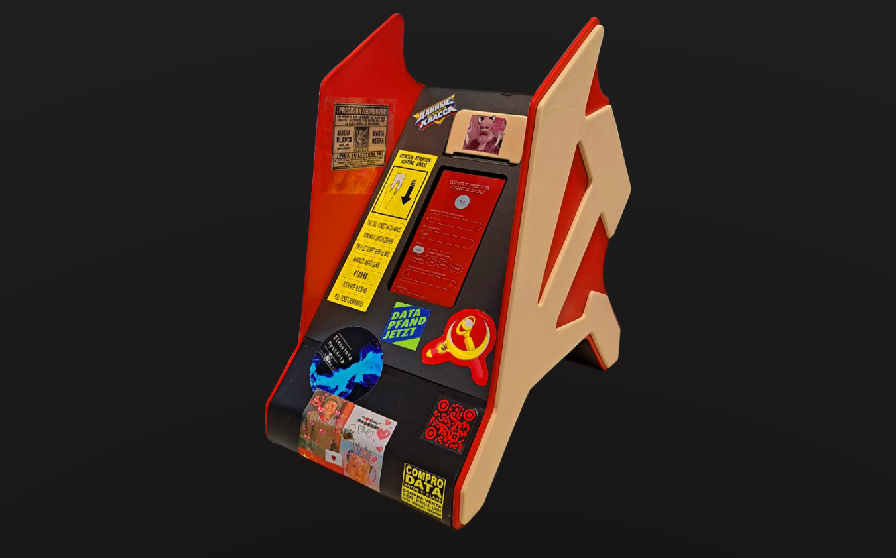
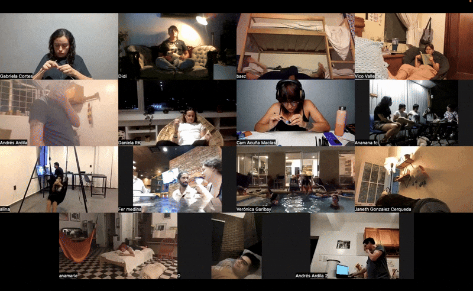
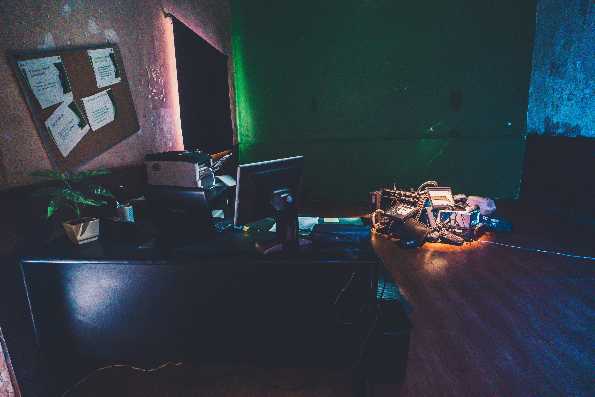
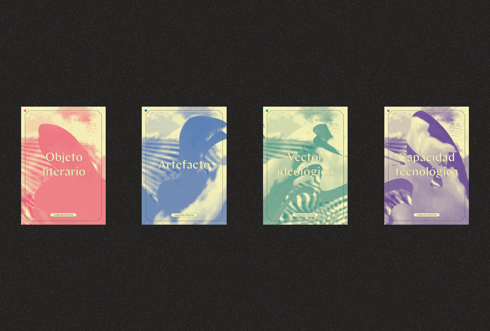
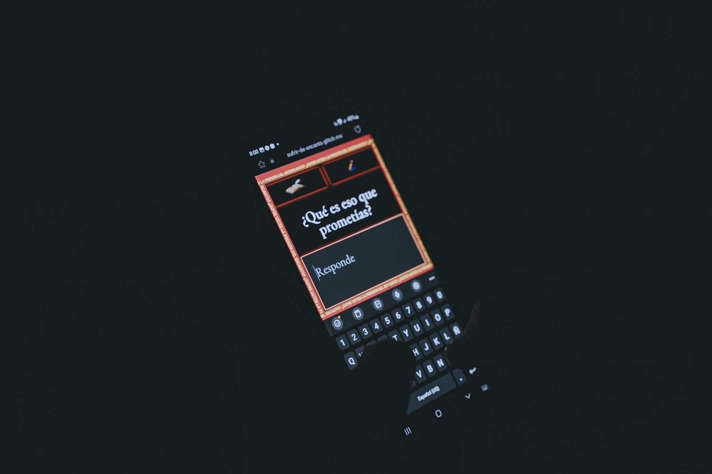

Isra Viadest and Sara Martínez are a Mexican artist duo based in Vienna.
Working across art and design, they share a process of investigation, iteration, testing and production. Their work explores speculative futures shaped by collective desires for social change, creating processes and interactive machines that open conversations about those futures.

Do you know how much Google, Meta, or OpenAI owe you? Meta Ow_s You is a speculative artifact that captures the moment collective resignation toward digital feudalism begins to mutate. At its center is a mid-sized consultation station where visitors input their Instagram handle, years of use, and patterns of engagement — and receive a printed ticket calculating how much Meta owes them for decades of unpaid digital labor: attention, data, cultural production, and algorithmic training.
The project uses the language of communist imaginaries deliberately: algorithmic surplus value, digital means of production, techno-worker class, in order to force a question about which world we'd rather inhabit.
The artifact plays with the visual tension between communist and labor movement aesthetics (red and yellow, industrial typography, production iconography) and the visual vocabulary of late-stage digital capitalism, optimization culture, visual gentrification, hyperstimulation, exploring what luxury communism might look like as a design language.
Exhibited at Futuros Pánicos during the Abierto Mexicano de Diseño, Mexico City, 2026.

An audiovisual performance that examines how rest has been transformed as the boundaries between work and non-work become increasingly blurred. The piece questions dominant productivity logics by framing rest not as recovery in service of labor, but as a space for contemplation, refusal, and suspension.
As part of the performance, participants were paid to rest and livestream their rest during the presentation. By compensating rest as an action in itself, the project displaces labor from its usual metrics of usefulness and efficiency, staging rest as a collective, visible, and shared condition rather than a private or instrumental one.
Vigilia Inconclusa deliberately renounces the posture of the “good worker,” inviting both performers and audience to reconsider rest as an act that resists optimization rather than serving it.

After the audiovisual performance where we paid participants to rest and livestream their rest, we were invited to produce an installation where we used the performance's documentation to build an immersive space.
We designed the space's atmosphere to make it seem like an office in the 90s was disrupted by a strange force, where the workers abandoned it spontaneously, as if a virus had taken over.

A speculative and literary workshop co-facilitated in Centro de Cultura Digital, Ciudad de México, where we wanted to challenge our collective relationship to technology through speculative and retro-speculative fiction.
Using a custom-made set of cards, we invited participants to travel to the past, eliminating one of the two central technological machines in our history: the Jacquard's loom or the Gutenberg's press. Then we traveled into the future and imagined a world shaped by a different course of history, undetermined by one of these two machines.
Participants were expected to produce prototypes, historical timelines, an artifact and a literary object by the end of the workshop.

An interactive performance exploring the oscillating nature of enchantment and disenchantment, power dynamics, and the forms of disillusionment associated with contemporary creative practices.
For this project, we developed a web app that allowed audience members to actively participate in the performance by sending messages from their mobile devices. These messages appeared live within the visual system, responding to prompts and questions about their own disenchantment with artistic production. By integrating audience input into the visuals, the performance sought to blur the boundaries between spectatorship and participation, turning personal expressions of disillusionment into a collective, visible layer of the event.